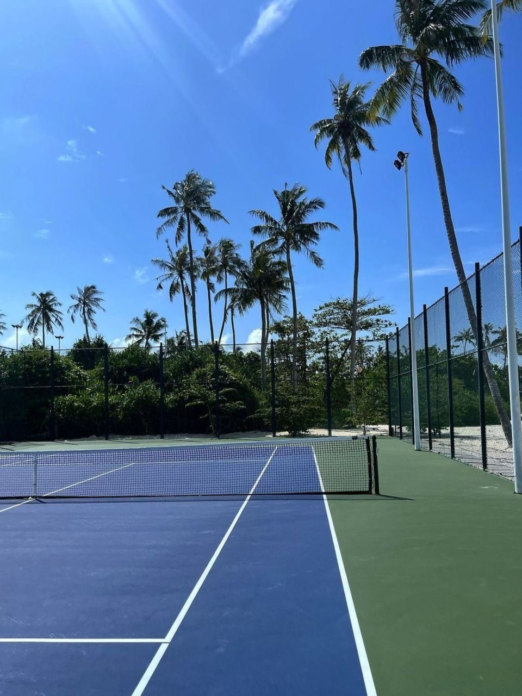
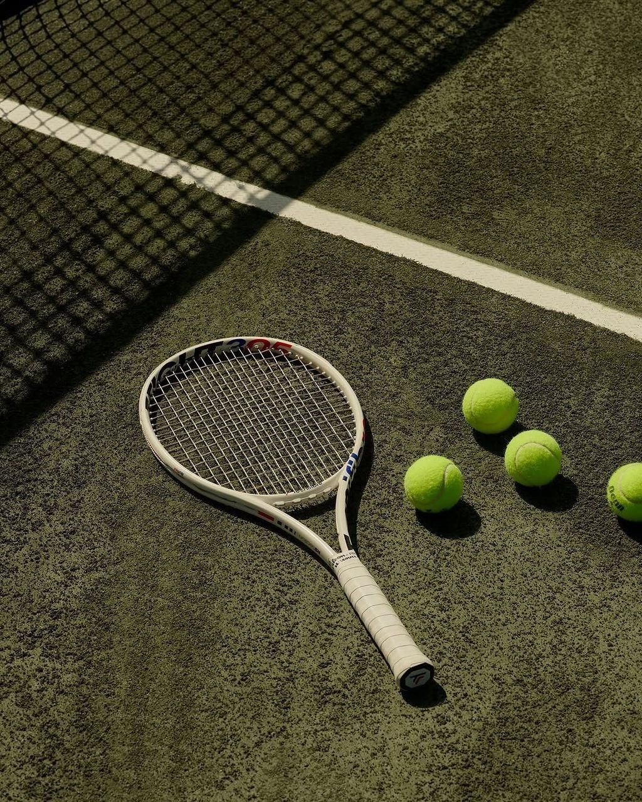
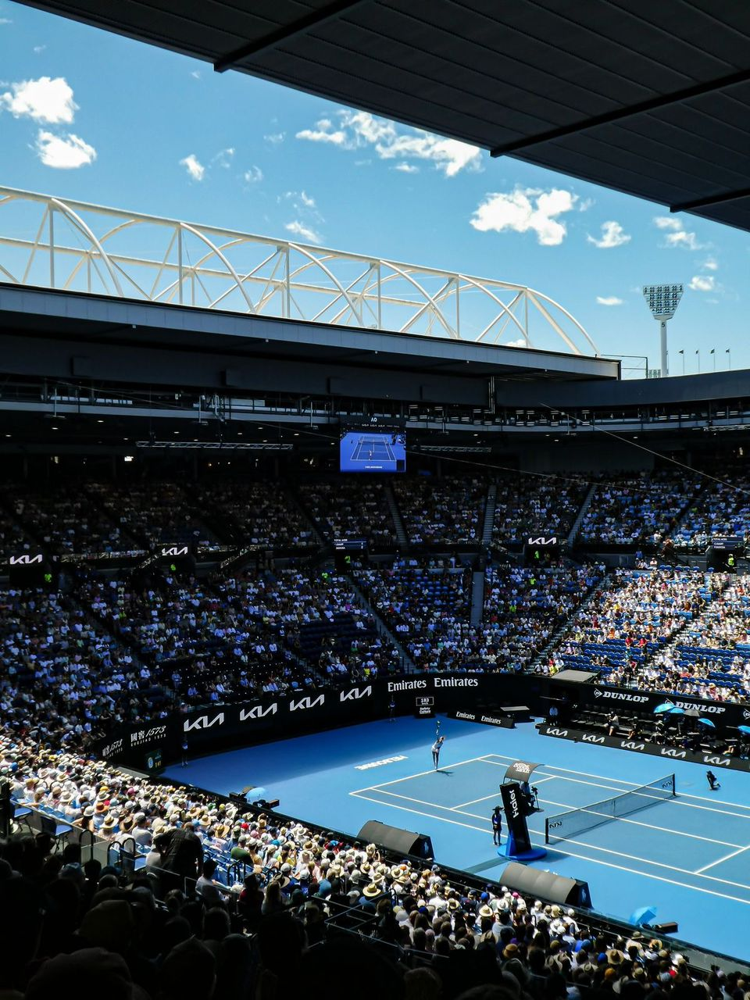
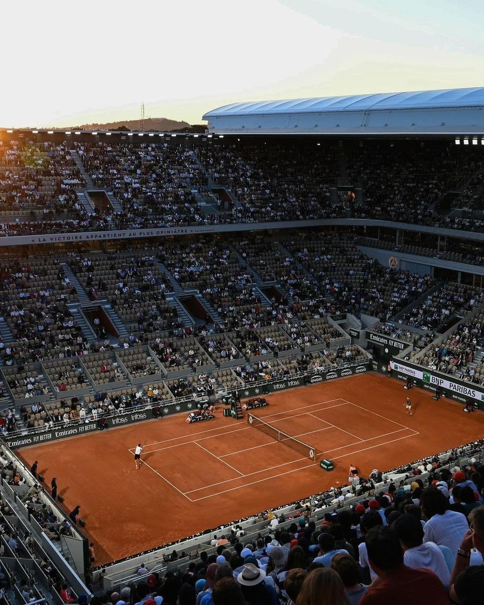
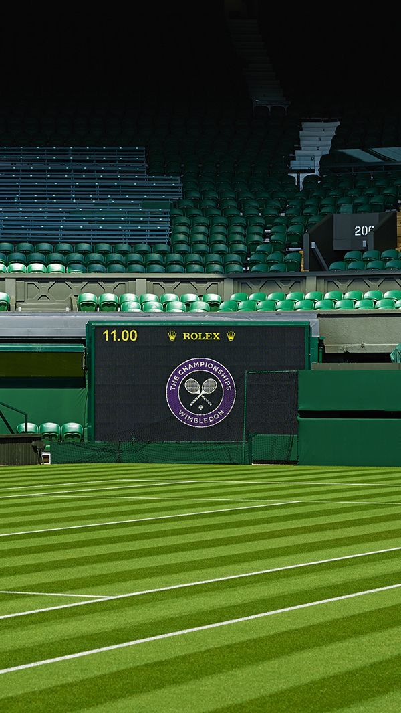
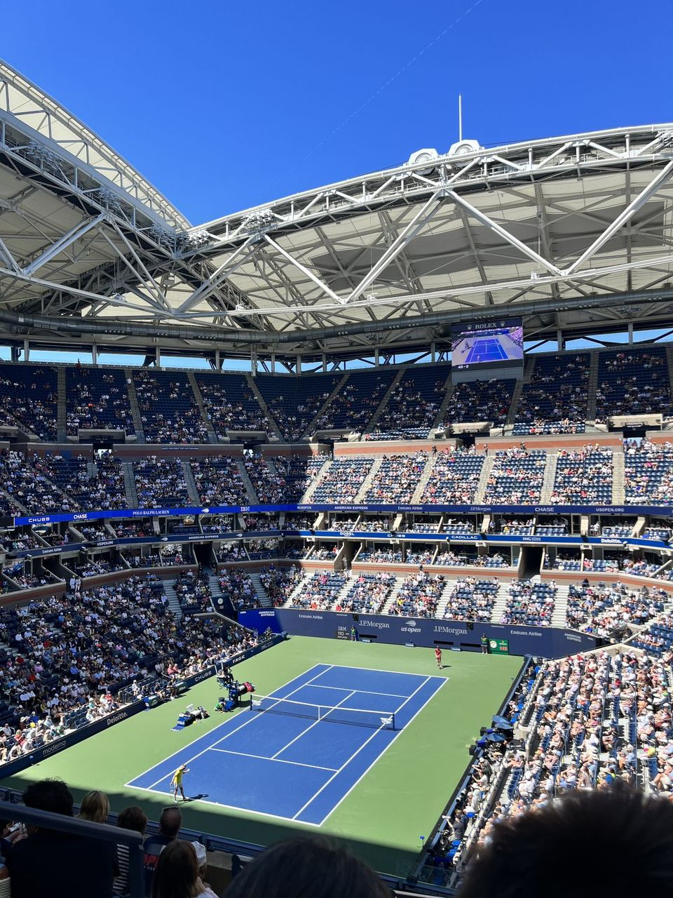

Le tennis est un sport de raquette très populaire pratiqué dans le monde entier. Il oppose deux joueurs dans un match en simple ou deux équipes de deux joueurs dans un match en double. Les joueurs utilisent une raquette pour frapper une balle et l’envoyer au-dessus d’un filet placé au milieu du terrain. L’objectif est de renvoyer la balle dans le camp adverse de façon à ce que l’adversaire ne puisse pas la renvoyer correctement. Le tennis est un sport qui demande à la fois de la rapidité, de la précision, de l’endurance et une grande concentration. Il peut se jouer sur différentes surfaces comme la terre battue, le gazon ou le court en dur, et chacune de ces surfaces influence la vitesse de la balle et le style de jeu des joueurs.
Les règles du tennis sont relativement simples mais suivent un système de points particulier. Un match est divisé en sets, et chaque set est composé de plusieurs jeux. Pour remporter un set, un joueur doit gagner au moins six jeux avec deux jeux d’écart sur son adversaire. Les points se comptent de la manière suivante : 15, 30, 40 puis jeu. Lorsque les deux joueurs arrivent à 40-40, la situation est appelée « égalité » ou « deuce ». Dans ce cas, un joueur doit gagner deux points consécutifs pour remporter le jeu. Chaque échange commence par un service : le joueur doit frapper la balle en diagonale dans le carré de service de l’adversaire. Si la balle touche le filet ou sort des limites du terrain, le service est considéré comme faute. Pendant l’échange, la balle doit rester dans les limites du terrain et ne peut rebondir qu’une seule fois avant d’être renvoyée. Le joueur qui ne parvient pas à renvoyer correctement la balle perd le point.
Le tennis est aujourd’hui l’un des sports les plus suivis au monde et il rassemble des millions de passionnés grâce à ses matchs spectaculaires et à ses grands joueurs légendaires. Tout au long de l’année, les meilleurs joueurs et joueuses participent à de nombreuses compétitions internationales qui attirent l’attention du public et déterminent les champions les plus talentueux de ce sport. Voici les compétitions les plus importantes du tennis appelées tournoi du Grand-Chelem.
TOP 100 plus beaux échanges de la saison 2024

Un court de tennis légendaire

Un sport , une passion!



